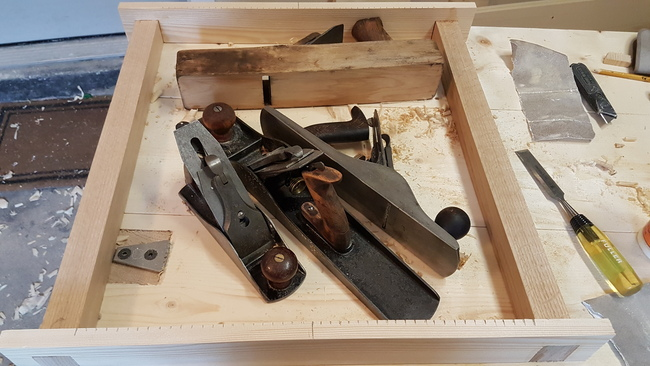
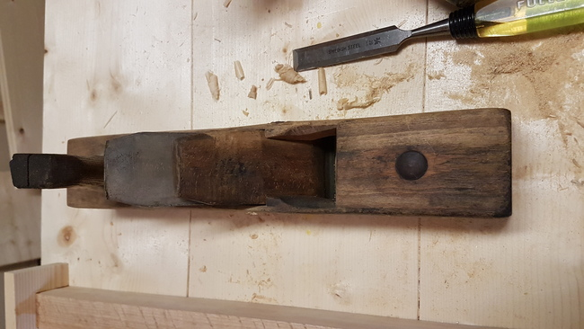
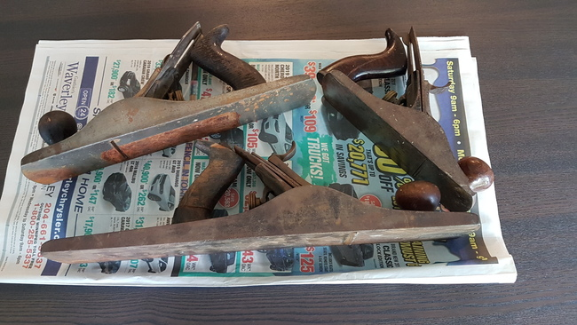
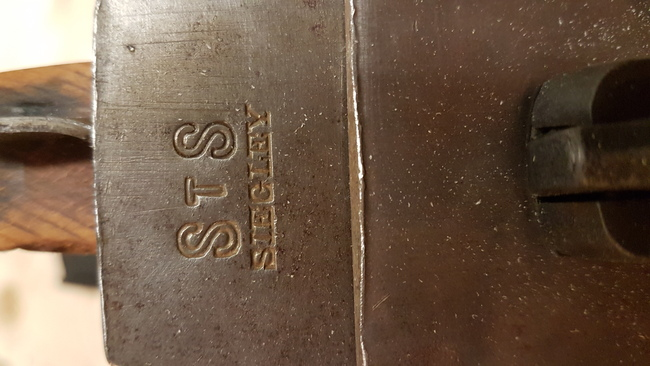
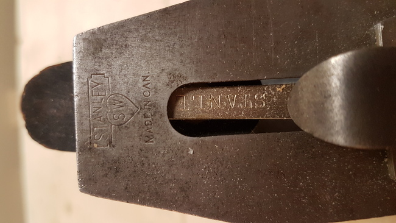

Hand Plane Restoration
Intro
I have searched for good quality hand planes for most of this cursed summer and have gotten good results - A collection of all the hand planes that a beginner could hope for. After acquiring them, I refurbished them and they transformed from busted rustic to the high precision instruments they were designed to be. They are serving me well and I hope for them to do so for my life.
Acquiring
New York Tools Jack Plane
Over the summer I combed my quarter of the city for garage sales, specifically looking for tools. The results are mixed, with the suburbs giving subpar kid's clothes, but the postwar areas gave superior results. The last to be fixed was the first found, a wooden jack plane for $10. After a month or two without any results I snapped it up.
The man who sold it to me told me:
My father in law made this hand plane himself while he lived in turkey. He was an excellent carpenter and made many of his tools.I decided not to mention the faint New York Tool Co stamped onto the nose of the plane.
I wonder how many "family heirlooms" of this nature have exaggerated or entirely fabricated roots?
Cast Iron Planes
Quick Aside - On Obtaining
Despite getting several gems in garage sales over the summer I've realized that they really aren't great for when you have something specific you want. For specifics, Kijiji or the equivalent is the better option. There are some nice gems in garage sales, but many of the things to be sold, frankly, are cheap garbage. If I want kid's clothes then it's great but since that is not my area of interest it's many hours driving for bad stuff. The gems are fun, especially if the people selling the things might either not know the value or not value the piece then deals can be found, but it's not great. The flea markets I've tried as well, where you can get good to top notch curated items of diverse type, but you will pay a premium in price - the people selling them can properly appraise the value! As an example I saw an old Stanley no.4 for $60, which is about the price of a garbage quality brand new plane (I speak about that price comparison and quality assessment from experience). In this sense you're getting a fair deal, but a fair deal is not necessarily a good deal, and a whole toolkit of fair deals will fairly soon become an expense. If you have more cash than patience the flea market is a good choice, but for me with some of the latter and less of the former, I have to go with posted ads a la Kijiji.A Lucky Break
I saw a mildly interesting ad for a transitional plane, generally considered to be not great tools, along with what looked like a jointer plane. It was $15 for one or $25 for both which wasn't bad. On Cortney and I's arrival to what turned out to be a lovely old couple, it turned out the man had in his possession a box full of old planes! As his partner talked to mine about their garden gnomes he offered to show the box to me and I obviously agreed. In it were several generic looking planes, but also an old Stanley no. 4, no. 5, which along with the jointer (apparently unmarked) would make a good set of respectively smoothing, jack, and jointer planes.

The planes were in typical condition for used planes, with a good covering of rust grime and tarnish patina.
Other than that the only real issue was that the tote (rear handle) of the jointer had split, which could easily be fixed with wood glue. Interestingly you can see on the no. 5 plane a rectangular rust patch where perhaps the plane was placed overnight on something like a wet cloth.
On closer inspection of the jointer I noted that the iron had STS SIEGLEY stamped onto it. I later learned that this was a Canadian plane maker that was bought by Stanley. During this time Siegley produced Stanley design planes but under their own name. Based on that and a measurement of 18" it looks like this mystery jointer is essentially a Canadian-made Stanley no. 6 plane. At the time I was just happy to have finally found a jointer plane. Instead of the transitional plane, I instead got the mentioned 4,5, and 6 planes with every single cent in Cortney and I's wallets, $40 on the dot. As far as I'm concerned that's a pretty solid deal, and it came with a free friendly conversation which I'm always happy to get. 
Caretaking
Further Inspection
The no. 4 plane has three patents on the body of the plane, along with a smaller brass knob. The patent numbers are:
- MAR - 25 - 02
- AUG - 19 - 02
- APR - 19 - 10
The no. 5 plane has S W in a heart on the iron, and the "L" in stanley is styled with the foot of the L tilting down. This identifies it as being from either 1921 or 1922. 
The Siegley branded no. 6 has less information on it, so linking it to any specific design is a bit more challenging. It has a larger brass knob (the same size as the no 5.) and Siegley branding ended 1927, so early to mid 1920's is a decent time period guess.